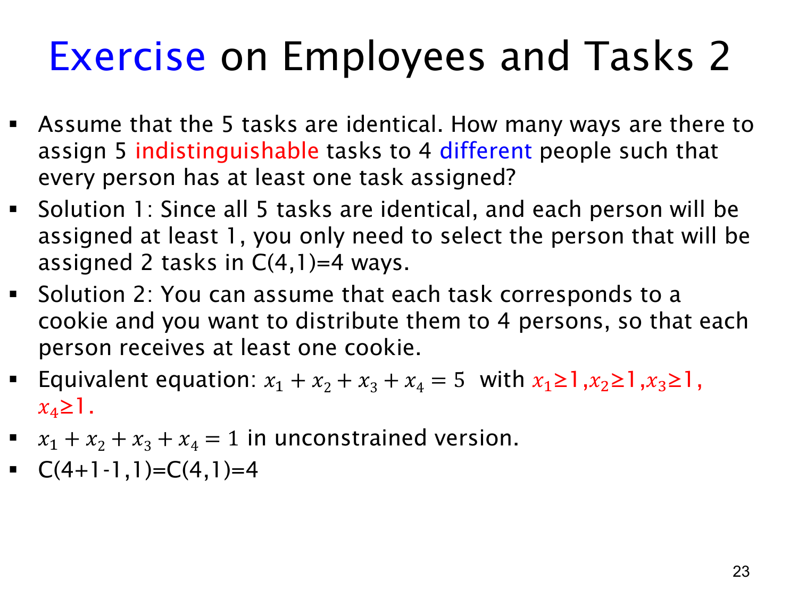

L1.8 · 第 22 页讲解原文
查看这一页课件

相同任务与不同任务，为什么答案差这么多？
这一页只改变一个条件：5 个任务现在是 identical / indistinguishable（相同、不可区分）的，仍分给 4 位不同的人，每人至少一个。
因为任务彼此相同，分配结果只由每个人拿到的数量决定。5 个任务让 4 人各有至少一个，数量模式只能是某人拿 2 个，其他三人各拿 1 个。因此只要选出谁拿两个：
(14)=4.
四种结果是
(2,1,1,1),(1,2,1,1),(1,1,2,1),(1,1,1,2).
也可以用正整数解表示。令 xi 为第 i 人收到的任务数，则
x1+x2+x3+x4=5,xi≥1.
给每人预留一个任务，定义 yi=xi−1≥0，得到
y1+y2+y3+y4=1.
用星与隔板法，解数为
(4−11+4−1)=(34)=4.
课件写“无约束版本”的方程时沿用了 xi 符号，应理解为已经平移后的新变量；新变量非负，原变量仍至少为 1，不能把两者直接混为一谈。
与上一页的不同任务比较：
| 任务性质 | 一个结果需要记录什么 | 本例数量 |
|---|---|---|
| 5 个不同任务 | 每个具体任务交给谁 | 240 |
| 5 个相同任务 | 每个人得到多少个 | 4 |
当任务不同，对指定的数量模式 (2,1,1,1)，还要区分谁拿哪两个任务、其他人分别拿哪个，有 (25)⋅3!=60 种。因此 4⋅60=240，与上一页相符。
处理分配题时，先判断对象是否可区分、接收者是否可区分，以及是否允许空组。不同对象分给不同接收者并要求非空，可以用满射容斥；相同对象分给不同接收者并要求非空，可以转化为正整数解。这一步模型判断比直接套公式更重要。